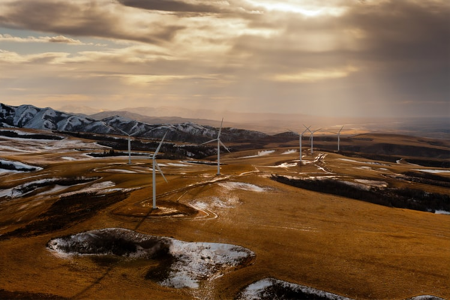

What sources of Energy are available?
Energy resources are of various types but here we are discussing in terms of renewable or not.Hence we have now two types of energy resources renewable and non-renewable.
1.Renewable resources.
A renewable resource is a natural resource which will replenish to replace the portion depleted by usage and consumption, either through natural reproduction or other recurring processes in a finite amount of time in a human time scale
There are many types of renewable resources but here we are discussing only five types. Though we don't know how many types of renewable resources are .
1.WIND ENERGY
The wind is a clean, free, and readily available renewable energy source. Each day, around the world, wind turbines are capturing the wind’s power and converting it to electricity. Wind power generation plays an increasingly important role in the way we power our world – in a clean, sustainable manner.
But how is wind energy created? Wind turbines allow us to harness the power of the wind and turn it into energy. When the wind blows, the turbine's blades spin clockwise, capturing energy. This triggers the main shaft of the wind turbine, connected to a gearbox within the nacelle, to spin. The gearbox sends that wind energy to the generator, converting it to electricity. Electricity then travels to a transformer, where voltage levels are adjusted to match with the grid.
Wind power is one of the fastest-growing energy sources in the world because of its many advantages. Wind power also presents inherent challenges in some regions of the world, which are being addressed through research and development (R&D) projects around the globe.
Wind power is cost-effective in many regions. In others, wind power needs to compete with other energy sources, but global R&D efforts are working on solutions to reduce the levelized cost of electricity (LCOE) of both onshore and offshore wind power.
Another advantage to wind power is that it is a domestic source of energy, harnessing a limitless local resource. Some viable locations for wind farms, however, are located remote areas that would present challenges in construction and electricity transmission logistics. Technology breakthrough such as two-piece blades and modular construction are helping overcome such challenges.
An additional benefit of wind power is it is a sustainable source of energy, as wind turbine operation does not directly emit any CO2 or greenhouse gases—helping countries meet their emission reduction targets and combating climate change. Wind energy is plentiful, readily available, and capturing its power does not deplete our valuable natural resources. In fact, an environmental benefit to wind power is its ability to counter the detrimental effects of climate change. The Global Wind Energy Outlook projects that by 2030 wind energy will offset 2.5 billion tons per year of carbon.
2.SOLAR ENERGY

Solar energy, radiation from the Sun capable of producing heat, causing chemical reactions, or generating electricity. The total amount of solar energy incident on Earth is vastly in excess of the world’s current and anticipated energy requirements. If suitably harnessed, this highly diffused source has the potential to satisfy all future energy needs. In the 21st century solar energy is expected to become increasingly attractive as a renewable energy source because of its inexhaustible supply and its nonpolluting character, in stark contrast to the finite fossil fuels coal, petroleum, and natural gas.
The Sun is an extremely powerful energy source, and sunlight is by far the largest source of energy received by Earth, but its intensity at Earth’s surface is actually quite low. This is essentially because of the enormous radial spreading of radiation from the distant Sun. A relatively minor additional loss is due to Earth’s atmosphere and clouds, which absorb or scatter as much as 54 percent of the incoming sunlight. The sunlight that reaches the ground consists of nearly 50 percent visible light, 45 percent infrared radiation, and smaller amounts of ultraviolet and other forms of electromagnetic radiation.The potential for solar energy is enormous, since about 200,000 times the world’s total daily electric-generating capacity is received by Earth every day in the form of solar energy. Unfortunately, though solar energy itself is free, the high cost of its collection, conversion, and storage still limits its exploitation in many places. Solar radiation can be converted either into thermal energy (heat) or into electrical energy, though the fis easier to accomplish.
3.GEOTHERMAL ENERGY
Geothermal energy is heat that is generated within the Earth. (Geo means “earth,” and thermal means “heat” in Greek.) It is a renewable resource that can be harvested for human use.
About 2,900 kilometers (1,800 miles) below the Earth’s crust, or surface, is the hottest part of our planet: the core. A small portion of the core’s heat comes from the friction and gravitational pull formed when Earth was created more than 4 billion years ago. However, the vast majority of Earth’s heat is constantly generated by the decay of radioactive isotopes, such as potassium-40 and thorium-232.
Isotopes are forms of an element that have a different number of neutrons than regular versions of the element’s atom.
Potassium, for instance, has 20 neutrons in its nucleus. Potassium-40, however, has 21 neutrons. As potassium-40 decays, its nucleus changes, emitting enormous amounts of energy (radiation). Potassium-40 most often decays to isotopes of calcium (calcium-40) and argon (argon-40).
Radioactive decay is a continual process in the core. Temperatures there rise to more than 5,000° Celsius (about 9,000° Fahrenheit). Heat from the core is constantly radiating outward and warming rocks, water, gas, and other geological material.
Earth’s temperature rises with depth from the surface to the core. This gradual change in temperature is known as the geothermal gradient. In most parts of the world, the geothermal gradient is about 25° C per 1 kilometer of depth (1° F per 77 feet of depth).
If underground rock formations are heated to about 700-1,300° C (1,300-2,400° F), they can become magma. Magma is molten (partly melted) rock permeated by gas and gas bubbles. Magma exists in the mantle and lower crust, and sometimes bubbles to the surface as lava.
Magma heats nearby rocks and underground aquifers. Hot water can be released through geysers, hot springs, steam vents, underwater hydrothermal vents, and mud pots.
These are all sources of geothermal energy. Their heat can be captured and used directly for heat, or their steam can be used to generate electricity. Geothermal energy can be used to heat structures such as buildings, parking lots, and sidewalks.
Most of the Earth’s geothermal energy does not bubble out as magma, water, or steam. It remains in the mantle, emanating outward at a slow pace and collecting as pockets of high heat. This dry geothermal heat can be accessed by drilling, and enhanced with injected water to create steam.
Many countries have developed methods of tapping into geothermal energy. Different types of geothermal energy are available in different parts of the world. In Iceland, abundant sources of hot, easily accessible underground water make it possible for most people to rely on geothermal sources as a safe, dependable, and inexpensive source of energy. Other countries, such as the U.S., must drill for geothermal energy at greater cost.
Harvesting Geothermal Energy: Heating and Cooling
Low-Temperature Geothermal Energy
Almost anywhere in the world, geothermal heat can be accessed and used immediately as a source of heat. This heat energy is called low-temperature geothermal energy. Low-temperature geothermal energy is obtained from pockets of heat about 150° C (302° F). Most pockets of low-temperature geothermal energy are found just a few meters below ground.
Low-temperature geothermal energy can be used for heating greenhouses, homes, fisheries, and industrial processes. Low-temperature energy is most efficient when used for heating, although it can sometimes be used to generate electricity.
People have long used this type of geothermal energy for engineering, comfort, healing, and cooking. Archaeological evidence shows that 10,000 years ago, groups of Native Americans gathered around naturally occurring hot springs to recuperate or take refuge from conflict. In the third century BCE, scholars and leaders warmed themselves in a hot spring fed by a stone pool near Lishan, a mountain in central China. One of the most famous hot spring spas is in the appropriately named town of Bath, England. Starting construction in about 60 CE, Roman conquerors built an elaborate system of steam rooms and pools using heat from the region’s shallow pockets of low-temperature geothermal energy.
The hot springs of Chaudes Aigues, France, have provided a source of income and energy for the town since the 1300s. Tourists flock to the town for its elite spas. The low-temperature geothermal energy also supplies heat to homes and businesses.
The United States opened its first geothermal district heating system in 1892 in Boise, Idaho. This system still provides heat to about 450 homes.
Co-Produced Geothermal Energy
Co-produced geothermal energy technology relies on other energy sources. This form of geothermal energy uses water that has been heated as a byproduct in oil and gas wells.
4.BIOMASS ENERGY
Biomass is made up of living things (or things that were once living). This can include any plant or animal material, such as sugarcane or corn crops, wood chips, or even dung.All these types of biomass contain energy, because they’re organic materials. So, whether they started life as plants or animals, they’ve all absorbed chemical energy naturally from the sun.When they’re used as biomass, these materials are called ‘feedstocks’.Biomass feedstocks can be used to create 3 types of energy:
Heat
Electricity
Biofuels, such as biodiesel.
Some biomass plants are multi-taskers, creating both heat and electricity. These are known as CHP (Combined Heat and Power) plants.So, how do biomass plants create heat? Simple: by burning feedstocks, just like our ancestors have done for thousands of years.Biomass can generate electricity in a number of ways – but the most common is ‘direct combustion’. This means burning the agricultural waste or wood to heat water. This produces steam, which spins turbines.There are many other ways to generate electricity using biomass. Some scientists are even exploring the possibility of using what we’ll politely call ‘human waste’ to power homes!Biofuels are basically fuels that are made out of biomass. These can be solid, liquid, or gas.
Biodiesel and bioethanol are two of the most common types of biofuel.
Biodiesel dates all the way back to the late 1800s, when Rudolf Diesel (of the diesel engine fame) invented an engine powered by vegetable oil. That was before petroleum-based diesel fuel became so widely available.
Bioethanol is an alcohol-based biofuel – but it’s not one you’d want to drink. It’s made by fermenting plants, and can also be used in vehicles. It was also used in the US way back in the 1800s, to light lamps.Biomass is always available. Humans and animals will always create waste, and plants will always grow – so there’s no danger we’ll run out of the stuff!
Using waste to create energy means that less of it goes into the landfill. That’s a win for the environment
Burning biomass doesn’t release sulfur or mercury, and it releases less nitrogen than burning coal
It’s cheap – after all, you wouldn’t charge someone for taking out the trash, would you?
You can produce biomass energy in your own home – for example, with a wood-burning stove or a biomass boiler
Bio-oils can also be used in things like plastics and medicines
Biomass has a lot of fans – but it has some downsides, too. These are the main ones:
Crops grown in order to be burnt for energy take up a lot of land. That land could be used for other things like conservation, housing, or growing crops for food.
The burning process releases CO2, which contributes to the climate crisis.
It also releases carbon monoxide, which adds to air pollution.
5.TIDAL ENERGY

Tidal energy is produced by the surge of ocean waters during the rise and fall of tides. Tidal energy is a renewable source of energy.
During the 20th century, engineers developed ways to use tidal movement to generate electricity in areas where there is a significant tidal range—the difference in area between high tide and low tide. All methods use special generators to convert tidal energy into electricity.
Tidal energy production is still in its infancy. The amount of power produced so far has been small. There are very few commercial-sized tidal power plants operating in the world. The first was located in La Rance, France. The largest facility is the Sihwa Lake Tidal Power Station in South Korea. The United States has no tidal plants and only a few sites where tidal energy could be produced at a reasonable price. China, France, England, Canada, and Russia have much more potential to use this type of energy.
In the United States, there are legal concerns about underwater land ownership and environmental impact. Investors are not enthusiastic about tidal energy because there is not a strong guarantee that it will make money or benefit consumers. Engineers are working to improve the technology of tidal energy generators to increase the amount of energy they produce, to decrease their impact on the environment, and to find a way to earn a profit for energy companies.
Tidal Energy Generators
There are currently three different ways to get tidal energy: tidal streams, barrages, and tidal lagoons.
For most tidal energy generators, turbines are placed in tidal streams. A tidal stream is a fast-flowing body of water created by tides. A turbine is a machine that takes energy from a flow of fluid. That fluid can be air (wind) or liquid (water). Because water is much more dense than air, tidal energy is more powerful than wind energy. Unlike wind, tides are predictable and stable. Where tidal generators are used, they produce a steady, reliable stream of electricity.
Placing turbines in tidal streams is complex, because the machines are large and disrupt the tide they are trying to harness. The environmental impact could be severe, depending on the size of the turbine and the site of the tidal stream. Turbines are most effective in shallow water. This produces more energy and allows ships to navigate around the turbines. A tidal generator's turbine blades also turn slowly, which helps marine life avoid getting caught in the system.
The world's first tidal power station was constructed in 2007 at Strangford Lough in Northern Ireland. The turbines are placed in a narrow strait between the Strangford Lough inlet and the Irish Sea. The tide can move at 4 meters (13 feet) per second across the strait.
Barrage
Another type of tidal energy generator uses a large dam called a barrage. With a barrage, water can spill over the top or through turbines in the dam because the dam is low. Barrages can be constructed across tidal rivers, bays, and estuaries.
Turbines inside the barrage harness the power of tides the same way a river dam harnesses the power of a river. The barrage gates are open as the tide rises. At high tide, the barrage gates close, creating a pool, or tidal lagoon. The water is then released through the barrage's turbines, creating energy at a rate that can be controlled by engineers.
The environmental impact of a barrage system can be quite significant. The land in the tidal range is completely disrupted. The change in water level in the tidal lagoon might harm plant and animal life. The salinity inside the tidal lagoon lowers, which changes the organisms that are able to live there. As with dams across rivers, fish are blocked into or out of the tidal lagoon. Turbines move quickly in barrages, and marine animals can be caught in the blades. With their food source limited, birds might find different places to migrate.
A barrage is a much more expensive tidal energy generator than a single turbine. Although there are no fuel costs, barrages involve more construction and more machines. Unlike single turbines, barrages also require constant supervision to adjust power output.
The tidal power plant at the Rance River estuary in Brittany, France, uses a barrage. It was built in 1966 and is still functioning. The plant uses two sources of energy: tidal energy from the English Channel and river current energy from the Rance River. The barrage has led to an increased level of silt in the habitat. Native aquatic plants suffocate in silt, and a flatfish called plaice is now extinct in the area. Other organisms, such as cuttlefish, a relative of squids, now thrive in the Rance estuary. Cuttlefish prefer cloudy, silty ecosystems
2.Non renewable sources
A non-renewable resource (also called a finite resource) is a natural resource that cannot be readily replaced by natural means at a quick enough pace to keep up with consumption.An example is carbon-based fossil fuel. The original organic matter, with the aid of heat and pressure, becomes a fuel such as oil or gas. Earth minerals and metal ores, fossil fuels (coal, petroleum, natural gas) and groundwater in certain aquifers are all considered non-renewable resources, though individual elements are always conserved (except in nuclear reactions).we will discuss mainly four types of non-renewable sources of energy.
2.1.NATURAL GAS
What is natural gas?
Natural gas is a fossil energy source that formed deep beneath the earth's surface. Natural gas contains many different compounds. The largest component of natural gas is methane, a compound with one carbon atom and four hydrogen atoms (CH4). Natural gas also contains smaller amounts of natural gas liquids (NGL, which are also hydrocarbon gas liquids), and nonhydrocarbon gases, such as carbon dioxide and water vapor. We use natural gas as a fuel and to make materials and chemicals.
How did natural gas form?
Millions to hundreds of millions of years ago and over long periods of time, the remains of plants and animals (such as diatoms) built up in thick layers on the earth’s surface and ocean floors, sometimes mixed with sand, silt, and calcium carbonate. Over time, these layers were buried under sand, silt, and rock. Pressure and heat changed some of this carbon and hydrogen-rich material into coal, some into oil (petroleum), and some into natural gas.Where is natural gas found?
In some places, natural gas moved into large cracks and spaces between layers of overlying rock. The natural gas found in these types of formations is sometimes called conventional natural gas. In other places, natural gas occurs in the tiny pores (spaces) within some formations of shale, sandstone, and other types of sedimentary rock. This natural gas is referred to as shale gas or tight gas, and it is sometimes called unconventional natural gas. Natural gas also occurs with deposits of crude oil, and this natural gas is called associated natural gas. Natural gas deposits are found on land, and some are offshore and deep under the ocean floor. A type of natural gas found in coal deposits is called coalbed methane.Natural gas is processed for sale and consumption
Natural gas withdrawn from natural gas or crude oil wells is called wet natural gas because, along with methane, it usually contains NGL—ethane, propane, butanes, and pentanes—and water vapor. Wellhead natural gas may also contain nonhydrocarbons such as sulfur, helium, nitrogen, hydrogen sulfide, and carbon dioxide, most of which must be removed from natural gas before it is sold to consumers.
From the wellhead, natural gas is sent to processing plants where water vapor and nonhydrocarbon compounds are removed and NGL are separated from the wet gas and sold separately. Some ethane is often left in the processed natural gas. The separated NGL are called natural gas plant liquids (NGPL), and the processed natural gas is called dry, consumer-grade, or pipeline quality natural gas. Some wellhead natural gas is sufficiently dry and satisfies pipeline transportation standards without processing. Chemicals called odorants are added to natural gas so that leaks in natural gas pipelines can be detected. Dry natural gas is sent through pipelines to underground storage fields or to distribution companies and then to consumers.
2.2.NUCLEAR ENERGY

Nuclear energy is the energy in the nucleus, or core, of an atom. Atoms are tiny units that make up all matter in the universe, and energy is what holds the nucleus together. There is a huge amount of energy in an atom's dense nucleus. In fact, the power that holds the nucleus together is officially called the "strong force."
Nuclear energy can be used to create electricity, but it must first be released from the atom. In the process of nuclear fission, atoms are split to release that energy.
A nuclear reactor, or power plant, is a series of machines that can control nuclear fission to produce electricity. The fuel that nuclear reactors use to produce nuclear fission is pellets of the element uranium. In a nuclear reactor, atoms of uranium are forced to break apart. As they split, the atoms release tiny particles called fission products. Fission products cause other uranium atoms to split, starting a chain reaction. The energy released from this chain reaction creates heat.
The heat created by nuclear fission warms the reactor's cooling agent. A cooling agent is usually water, but some nuclear reactors use liquid metal or molten salt. The cooling agent, heated by nuclear fission, produces steam. The steam turns turbines, or wheels turned by a flowing current. The turbines drive generators, or engines that create electricity.
Rods of material called nuclear poison can adjust how much electricity is produced. Nuclear poisons are materials, such as a type of the element xenon, that absorb some of the fission products created by nuclear fission. The more rods of nuclear poison that are present during the chain reaction, the slower and more controlled the reaction will be. Removing the rods will allow a stronger chain reaction and create more electricity.
As of 2011, about 15 percent of the world's electricity is generated by nuclear power plants. The United States has more than 100 reactors, although it creates most of its electricity from fossil fuels and hydroelectric energy. Nations such as Lithuania, France, and Slovakia create almost all of their electricity from nuclear power plants.
Nuclear Food: Uranium
Uranium is the fuel most widely used to produce nuclear energy. That's because uranium atoms split apart relatively easily. Uranium is also a very common element, found in rocks all over the world. However, the specific type of uranium used to produce nuclear energy, called U-235, is rare. U-235 makes up less than one percent of the uranium in the world.
Although some of the uranium the United States uses is mined in this country, most is imported. The U.S. gets uranium from Australia, Canada, Kazakhstan, Russia, and Uzbekistan. Once uranium is mined, it must be extracted from other minerals. It must also be processed before it can be used.
Because nuclear fuel can be used to create nuclear weapons as well as nuclear reactors, only nations that are part of the Nuclear Non-Proliferation Treaty (NPT) are allowed to import uranium or plutonium, another nuclear fuel. The treaty promotes the peaceful use of nuclear fuel, as well as limiting the spread of nuclear weapons.
A typical nuclear reactor uses about 200 tons of uranium every year. Complex processes allow some uranium and plutonium to be re-enriched or recycled. This reduces the amount of mining, extracting, and processing that needs to be done.
Nuclear Energy and People
Nuclear energy produces electricity that can be used to power homes, schools, businesses, and hospitals. The first nuclear reactor to produce electricity was located near Arco, Idaho. The Experimental Breeder Reactor began powering itself in 1951. The first nuclear power plant designed to provide energy to a community was established in Obninsk, Russia, in 1954.
Building nuclear reactors requires a high level of technology, and only the countries that have signed the Nuclear Non-Proliferation Treaty can get the uranium or plutonium that is required. For these reasons, most nuclear power plants are located in the developed world.
Nuclear power plants produce renewable, clean energy. They do not pollute the air or release greenhouse gases. They can be built in urban or rural areas, and do not radically alter the environment around them.
The steam powering the turbines and generators is ultimately recycled. It is cooled down in a separate structure called a cooling tower. The steam turns back into water and can be used again to produce more electricity. Excess steam is simply recycled into the atmosphere, where it does little harm as clean water vapor.
However, the byproduct of nuclear energy is radioactive material. Radioactive material is a collection of unstable atomic nuclei. These nuclei lose their energy and can affect many materials around them, including organisms and the environment. Radioactive material can be extremely toxic, causing burns and increasing the risk for cancers, blood diseases, and bone decay.
Radioactive waste is what is left over from the operation of a nuclear reactor. Radioactive waste is mostly protective clothing worn by workers, tools, and any other material that have been in contact with radioactive dust. Radioactive waste is long-lasting. Materials like clothes and tools can stay radioactive for thousands of years. The government regulates how these materials are disposed of so they don't contaminate anything else.
Used fuel and rods of nuclear poison are extremely radioactive. The used uranium pellets must be stored in special containers that look like large swimming pools. Water cools the fuel and insulates the outside from contact with the radioactivity. Some nuclear plants store their used fuel in dry storage tanks above ground.
The storage sites for radioactive waste have become very controversial in the United States. For years, the government planned to construct an enormous nuclear waste facility near Yucca Mountain, Nevada, for instance. Environmental groups and local citizens protested the plan. They worried about radioactive waste leaking into the water supply and the Yucca Mountain environment, about 130 kilometers (80 miles) from the large urban area of Las Vegas, Nevada. Although the government began investigating the site in 1978, it stopped planning for a nuclear waste facility in Yucca Mountain in 2009.
Chernobyl
Critics of nuclear energy worry that the storage facilities for radioactive waste will leak, crack, or erode. Radioactive material could then contaminate the soil and groundwater near the facility. This could lead to serious health problems for the people and organisms in the area. All communities would have to be evacuated.
This is what happened in Chernobyl, Ukraine, in 1986. A steam explosion at one of the power plants four nuclear reactors caused a fire, called a plume. This plume was highly radioactive, creating a cloud of radioactive particles that fell to the ground, called fallout. The fallout spread over the Chernobyl facility, as well as the surrounding area. The fallout drifted with the wind, and the particles entered the water cycle as rain. Radioactivity traced to Chernobyl fell as rain over Scotland and Ireland. Most of the radioactive fallout fell in Belarus.
The environmental impact of the Chernobyl disaster was immediate. For kilometers around the facility, the pine forest dried up and died. The red color of the dead pines earned this area the nickname the Red Forest. Fish from the nearby Pripyat River had so much radioactivity that people could no longer eat them. Cattle and horses in the area died.
More than 100,000 people were relocated after the disaster, but the number of human victims of Chernobyl is difficult to determine. The effects of radiation poisoning only appear after many years. Cancers and other diseases can be very difficult to trace to a single source.
Future of Nuclear Energy
Nuclear reactors use fission, or the splitting of atoms, to produce energy. Nuclear energy can also be produced through fusion, or joining (fusing) atoms together. The sun, for instance, is constantly undergoing nuclear fusion as hydrogen atoms fuse to form helium. Because all life on our planet depends on the sun, you could say that nuclear fusion makes life on Earth possible.
Nuclear power plants do not have the capability to safely and reliably produce energy from nuclear fusion. It's not clear whether the process will ever be an option for producing electricity. Nuclear engineers are researching nuclear fusion, however, because the process will likely be safe and cost-effective.
2.3.COAL ENERGY OR ENERGY FROM COAL.
Coal takes millions of years to form
Coal is a combustible black or brownish-black sedimentary rock with a high amount of carbon and hydrocarbons. Coal is classified as a nonrenewable energy source because it takes millions of years to form. Coal contains the energy stored by plants that lived hundreds of millions of years ago in swampy forests.
Layers of dirt and rock covered the plants over millions of years. The resulting pressure and heat turned the plants into the substance we call coal.Types of coal
Coal is classified into four main types, or ranks: anthracite, bituminous, subbituminous, and lignite. The ranking depends on the types and amounts of carbon the coal contains and on the amount of heat energy the coal can produce. The rank of a coal deposit is determined by the amount of pressure and heat that acted on the plants over time.
Anthracite contains 86%–97% carbon and generally has the highest heating value of all ranks of coal. Anthracite accounted for less than 1% of the coal mined in the United States in 2019. All of the anthracite mines in the United States are in northeastern Pennsylvania. In the United States, anthracite is mainly used by the metals industry.
Bituminous coal contains 45%–86% carbon. Bituminous coal in the United States is between 100 million and 300 million years old. Bituminous coal is the most abundant rank of coal found in the United States, and it accounted for about 48% of total U.S. coal production in 2019. Bituminous coal is used to generate electricity and is an important fuel and raw material for making coking coal or use in the iron and steel industry. Bituminous coal was produced in at least 19 states in 2019, but five states accounted for about 75% of total bituminous production: West Virginia (27.5%), Pennsylvania (14.0%), Illinois (13.5%), Kentucky (10.6%), and Indiana (9.3%).
Subbituminous coal typically contains 35%–45% carbon, and it has a lower heating value than bituminous coal. Most subbituminous coal in the United States is at least 100 million years old. About 44% of total U.S. coal production in 2019 was subbituminous and about 88% was produced in Wyoming and 9% in Montana. The remainder was produced in Alaska, Colorado and New Mexico.
Lignite contains 25%–35% carbon and has the lowest energy content of all coal ranks. Lignite coal deposits tend to be relatively young and were not subjected to extreme heat or pressure. Lignite is crumbly and has high moisture content, which contributes to its low heating value.
2.4.PETROLEUM ENERGY.
Millions of years ago, algae and plants lived in shallow seas. After dying and sinking to the seafloor, the organic material mixed with other sediments and was buried. Over millions of years under high pressure and high temperature, the remains of these organisms transformed into what we know today as fossil fuels. Coal, natural gas, and petroleum are all fossil fuels that formed under similar conditions.
Today, petroleum is found in vast underground reservoirs where ancient seas were located. Petroleum reservoirs can be found beneath land or the ocean floor. Their crude oil is extracted with giant drilling machines.
Crude oil is usually black or dark brown, but can also be yellowish, reddish, tan, or even greenish. Variations in color indicate the distinct chemical compositions of different supplies of crude oil. Petroleum that has few metals or sulfur, for instance, tends to be lighter (sometimes nearly clear).
Petroleum is used to make gasoline, an important product in our everyday lives. It is also processed and part of thousands of different items, including tires, refrigerators, life jackets, and anesthetics.
When petroleum products such as gasoline are burned for energy, they release toxic gases and high amounts of carbon dioxide, a greenhouse gas. Carbon helps regulate the Earth’s atmospheric temperature, and adding to the natural balance by burning fossil fuels adversely affects our climate.
There are huge quantities of petroleum found under Earth’s surface and in tar pits that bubble to the surface. Petroleum even exists far below the deepest wells that are developed to extract it.
However, petroleum, like coal and natural gas, is a non-renewable source of energy. It took millions of years for it to form, and when it is extracted and consumed, there is no way for us to replace it.
Oil supplies will run out. Eventually, the world will reach “peak oil,” or its highest production level. Some experts predict peak oil could come as soon as 2050. Finding alternatives to petroleum is crucial to global energy use, and is the focus of many industries.
Formation of Petroleum
The geological conditions that would eventually create petroleum formed millions of years ago, when plants, algae, and plankton drifted in oceans and shallow seas. These organisms sank to the seafloor at the end of their life cycle. Over time, they were buried and crushed under millions of tons of sediment and even more layers of plant debris.
Eventually, ancient seas dried up and dry basins remained, called sedimentary basins. Deep under the basin floor, the organic material was compressed between Earth’s mantle, with very high temperatures, and millions of tons of rock and sediment above. Oxygen was almost completely absent in these conditions, and the organic matter began to transform into a waxy substance called kerogen.
With more heat, time, and pressure, the kerogen underwent a process called catagenesis, and transformed into hydrocarbons. Hydrocarbons are simply chemicals made up of hydrogen and carbon. Different combinations of heat and pressure can create different forms of hydrocarbons. Some other examples are coal, peat, and natural gas.
Sedimentary basins, where ancient seabeds used to lie, are key sources of petroleum. In Africa, the Niger Delta sedimentary basin covers land in Nigeria, Cameroon, and Equatorial Guinea. More than 500 oil deposits have been discovered in the massive Niger Delta basin, and they comprise one of the most productive oil fields in Africa.
Chemistry and Classification of Crude Oil
The gasoline we use to fuel our cars, the synthetic fabrics of our backpacks and shoes, and the thousands of different useful products made from petroleum come in forms that are consistent and reliable. However, the crude oil from which these items are produced is neither consistent nor uniform.
Chemistry
Crude oil is composed of hydrocarbons, which are mainly hydrogen (about 13% by weight) and carbon (about 85%). Other elements such as nitrogen (about 0.5%), sulfur (0.5%), oxygen (1%), and metals such as iron, nickel, and copper (less than 0.1%) can also be mixed in with the hydrocarbons in small amounts.
The way molecules are organized in the hydrocarbon is a result of the original composition of the algae, plants, or plankton from millions of years ago. The amount of heat and pressure the plants were exposed to also contributes to variations that are found in hydrocarbons and crude oil.
Due to this variation, crude oil that is pumped from the ground can consist of hundreds of different petroleum compounds. Light oils can contain up to 97% hydrocarbons, while heavier oils and bitumens might contain only 50% hydrocarbons and larger quantities of other elements. It is almost always necessary to refine crude oil in order to make useful products.
Classification
Oil is classified according to three main categories: the geographic location where it was drilled, its sulfur content, and its API gravity (a measure of density).
Classification: Geography
Oil is drilled all over the world. However, there are three primary sources of crude oil that set reference points for ranking and pricing other oil supplies: Brent Crude, West Texas Intermediate, and Dubai and Oman.
Brent Crude is a mixture that comes from 15 different oil fields between Scotland and Norway in the North Sea. These fields supply oil to most of Europe.
West Texas Intermediate (WTI) is a lighter oil that is produced mostly in the U.S. state of Texas. It is “sweet” and “light”—considered very high quality. WTI supplies much of North America with oil.
Dubai crude, also known as Fateh or Dubai-Oman crude, is a light, sour oil that is produced in Dubai, part of the United Arab Emirates. The nearby country of Oman has recently begun producing oil. Dubai and Oman crudes are used as a reference point for pricing Persian Gulf oils that are mostly exported to Asia.
2.5.OTHER NON RENEWABLE SOURCES OF ENERGY.
There are several minerals ,metal ores ,many other fossil feuls which are also exhaustive sources of energy aka non renewable source of energy.